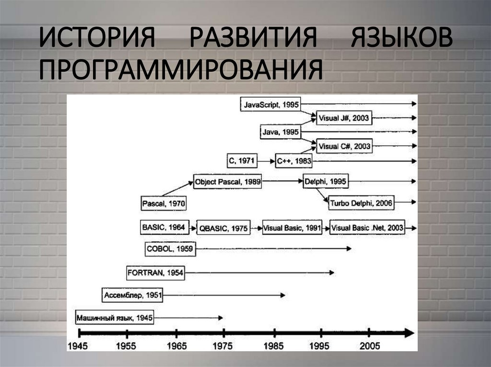
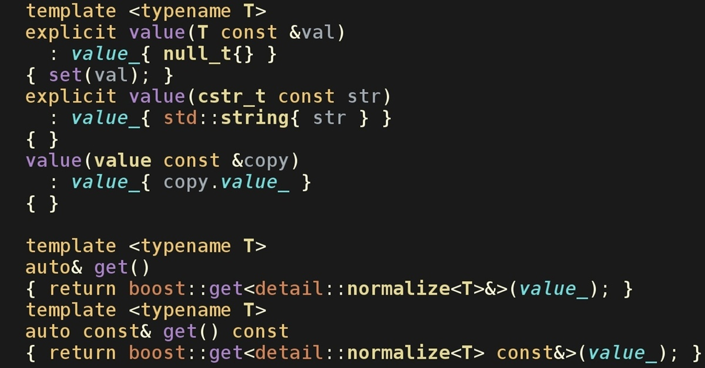

История создания

Язык C был разработан Деннисом Ритчи в компании Bell Labs в начале 1970-х годов. Он стал развитием языка B, который, в свою очередь, происходил от языка BCPL. Первоначальной целью было создание удобного языка для написания операционной системы UNIX.
Работа над языком началась в 1969 году, а первая официальная версия появилась около 1972 года. В 1978 году Брайан Керниган и Деннис Ритчи опубликовали книгу The C Programming Language
— знаменитый «K&R», который долгое время служил неофициальным стандартом языка.
В 1989 году язык был стандартизирован ANSI, эта версия известна как C89 (или ANSI C). Позже появились стандарты C99, C11, C17 и C23. Именно C стал основой для множества современных языков: C++, Java, C#, Go и других.
Сегодня C остаётся одним из самых востребованных языков для системного программирования, разработки операционных систем, встраиваемых устройств и компиляторов. Подробнее с историей можно ознакомиться в статье Википедии.
Краткий обзор языка

C — это процедурный язык программирования общего назначения с статической типизацией. Он предоставляет низкоуровневый доступ к памяти через указатели, но при этом остаётся достаточно высокоуровневым для написания переносимых программ.
Основные характеристики
- Процедурный — программа строится из функций.
- Статическая типизация — тип переменной известен на этапе компиляции.
- Низкоуровневый доступ к памяти — указатели и ручное управление памятью.
- Компилируемый — код транслируется в машинный язык.
- Переносимый — при соблюдении стандарта код работает на разных платформах.
- Небольшой набор ключевых слов — всего около 32 в стандарте C89.
Типы данных
Основные примитивные типы C: char, int, float, double, а также модификаторы short, long, signed, unsigned. Производные типы включают массивы, структуры (struct), объединения (union), перечисления (enum) и указатели.
Области применения
| Сфера | Примеры | Описание |
|---|---|---|
| Системное программирование | Ядра ОС (Linux, Windows) | Разработка операционных систем и драйверов |
| Встраиваемые системы | Arduino, микроконтроллеры | Программирование устройств с ограниченными ресурсами |
| Компиляторы и интерпретаторы | GCC, Clang, CPython | Создание языков программирования и инструментов |
| Игры и графика | OpenGL, игровые движки | Высокопроизводительная графика и вычисления |
| Базы данных | SQLite, PostgreSQL | Реализация СУБД и высоконагруженных систем |
Популярность
Язык C стабильно входит в топ-5 самых популярных языков программирования согласно индексу TIOBE. Ознакомиться с текущим рейтингом можно на официальном сайте TIOBE.
C остаётся фундаментом современной информатики: на нём написаны ядра большинства операционных систем, интерпретаторы популярных языков и миллионы встраиваемых устройств. Вернуться к началу статьи.
Примеры кода
Классический пример программы «Hello, World!» на языке C:
#include <stdio.h>
int main(void) {
printf("Hello, World!\n");
return 0;
}Пример работы с указателями и динамической памятью:
#include <stdio.h>
#include <stdlib.h>
int main(void) {
int *arr = (int*) malloc(5 * sizeof(int));
if (arr == NULL) {
printf("Ошибка выделения памяти\n");
return 1;
}
for (int i = 0; i < 5; i++) {
arr[i] = i * i;
}
for (int i = 0; i < 5; i++) {
printf("%d ", arr[i]);
}
free(arr);
return 0;
}Пример работы со структурами и строками:
#include <stdio.h>
#include <string.h>
struct Person {
char name[50];
int age;
};
int main(void) {
struct Person p;
strcpy(p.name, "Иван");
p.age = 25;
printf("Имя: %s, возраст: %d\n", p.name, p.age);
return 0;
}Инструменты разработки
Для работы с языком C используются следующие инструменты:
- GCC — компилятор GNU Compiler Collection.
- Clang — современный компилятор на основе LLVM.
- Visual Studio / CLion — среды разработки.
- Make / CMake — системы сборки проектов.
- GDB — отладчик.
Полезные ресурсы
Для изучения языка C рекомендуются: